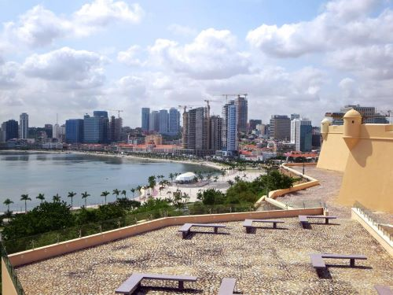
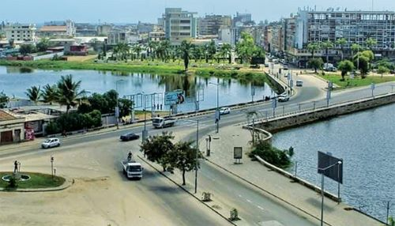
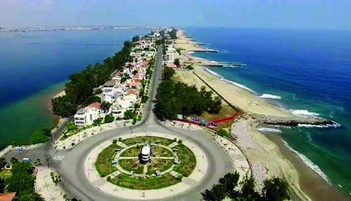
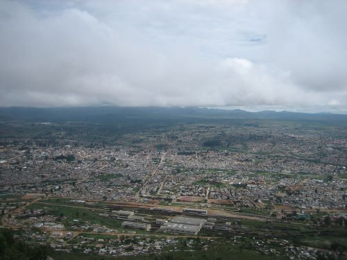

Major Cities
The content in this page will help you with good information about major cities in Angola
Luanda
Luanda is the capital and largest city of Angola. Located on the coast of the Atlantic Ocean, it is also the main port and economic center of the country. According to a statistics done In 2018, it had a population of approximately 2.5 million inhabitants, which makes it the seventh most populous Portuguese-speaking city in the world, behind São Paulo, Rio de Janeiro, Brasília, Salvador, Fortaleza and Belo Horizonte, all in Brazil and, in fact, the second most populous Portuguese-speaking capital in the world, ahead of Maputo and Lisbon. If considered the Metropolitan Region of Luanda, in 2015 its population would be almost 4.5 million inhabitants. The industries present in the city include the transformation of agricultural products, beverage production, textiles, cement, recently car assembly plants, building materials, plastics, metallurgy, cigarettes and shoes. Oil, extracted in the vicinity, is refined in the city, although the refinery was damaged several times during the civil war that ravaged the country between 1975 and 2002. Luanda has an excellent natural port, the main exports being coffee, cotton, sugar, diamonds, iron, salt, copper, gold, wheat and corn. With an extremely cosmopolitan profile, the inhabitants of Luanda are, for the most part, members of the Ambundu, Congo and Ovimbundu ethnic groups, with relevant fractions of all Angolan ethnic origins. There is a population of European origin, consisting mainly of Portuguese, estimated at around 400,000 people. There is also an important Chinese community estimated at 67,000. The official and most widely spoken language is Portuguese, with several African languages also spoken. Luanda was the main city to host the 2010 Africa Cup of Nations games.
Lobito
Lobito is a city and municipality in the province of Benguela, in Angola, located on the coast of the Atlantic Ocean. According to population projections for 2018, prepared by the National Institute of Statistics, it has a population of 436,467 inhabitants and a territorial area of 3,648 km², making it the second most populous municipality in the province, second only to Benguela. It is limited to the north by the municipality of Sumbe, to the east by the municipality of Bocoio, to the south by the municipality of Catumbela and to the west by the Atlantic Ocean. One of the nation's logistical hubs, it has its links in the important port and rail terminals, as well as in the continental road network, which connect it to the rest of the country, taking it to the east coast of Africa.
Benguela
Benguela is a city and municipality, capital of the province of Benguela, in western Angola, composed only of the seat commune, which is organized into six zones. According to population projections for 2018, prepared by the National Institute of Statistics, it has a population of 623,777 inhabitants and a land area of 2,100 km², making it the most populous municipality in the province and the tenth most populous in the nation. It is limited to the north by the municipality of Catumbela, to the east by the municipalities of Bocoio and Caimbambo, to the south by the municipality of Baía Farta and to the west by the Atlantic Ocean.
Lubango
Lubango is a city and municipality in Angola, capital of the province of Huíla. According to population projections for 2018, prepared by the National Institute of Statistics, it has a population of 876,339 inhabitants and a land area of 3,147 km², making it the most populous municipality in the province, in the southern region of Angola, and the sixth most populous in the country. , the first outside the province of Luanda. It developed mainly from the "colony of Sá da Bandeira", taking that name between 1884 and 1975, while the municipality was always called Lubango. After the country's independence, both the city and the municipality took the name of Lubango definitively. The city of Lubango forms with its neighbors Chibia and Humpata the virtual Metropolitan Region of Lubango, an area of strong conurbation and connection of urban services.